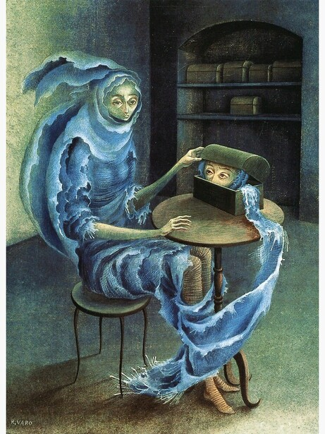

Remedios Varo
Pintora surrealista, escritora
& artista gráfica
«Pero echarse al agua a nadar
y no querer al mismo tiempo mojarse
la ropa, esto, Gerardo, es imposible»
María de los Remedios Alicia Rodriga Varo y Uranga, conocida como Remedios Varo, fue una pintora surrealista, escritora y artista gráfica española. Fue una de las primeras mujeres que aprendió a estudiar en la Real Academia de Bellas Artes de San Fernando de Madrid. En 1932 se estableció en Barcelona, donde trabajó como diseñadora publicitaria, sumándose al grupo surrealista catalán Logicofobista. En 1937 viajó a París junto al poeta surrealista francés Benjamin Péret y en 1941, con la llegada de los nazis a la capital francesa, se exilió a México. Nunca regresó a España.
El viaje
espiritual hacia
la libertad
